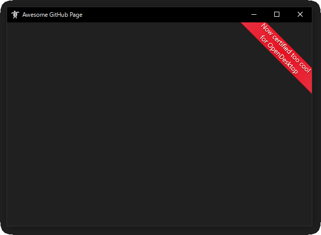
"A faithful Windows 10 theme" by Honu
Last updated: July 8, 2026 (version 7)
The Fake10 OpenDesktop page was deleted because of licensing issues with some bundled assets. I never expected Fake10 to take off in the first place, so I don't really mind, but I'd like to provide a download page for future updates and for users who still care about the theme. Consider yourself a part of my ultra-secret Windows 10 ricing club if you're viewing this page. And tell your friends!
The original listing amassed 7,500 downloads and reached #1 most popular XFCE theme before deletion. I was never contacted to fix any licensing issues.
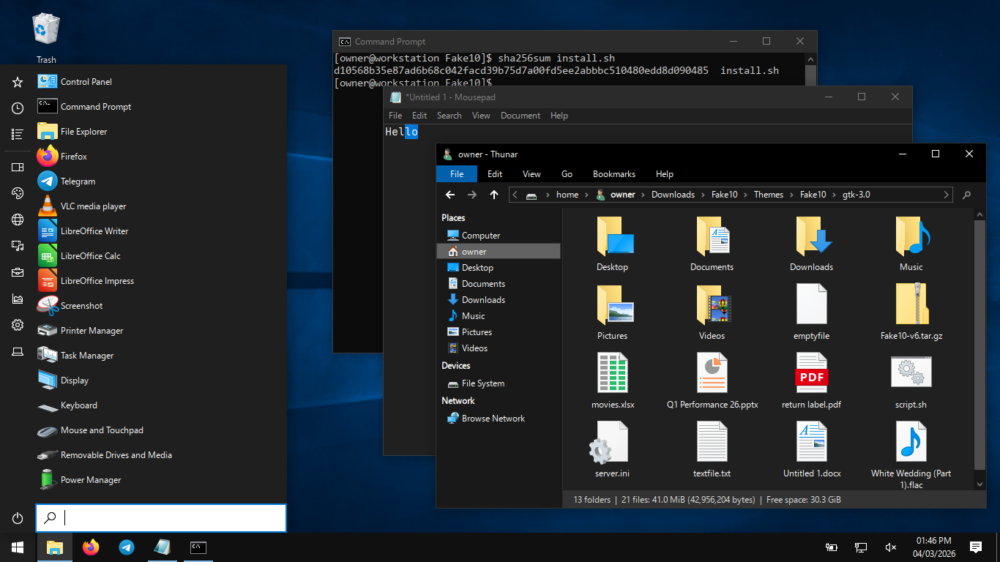
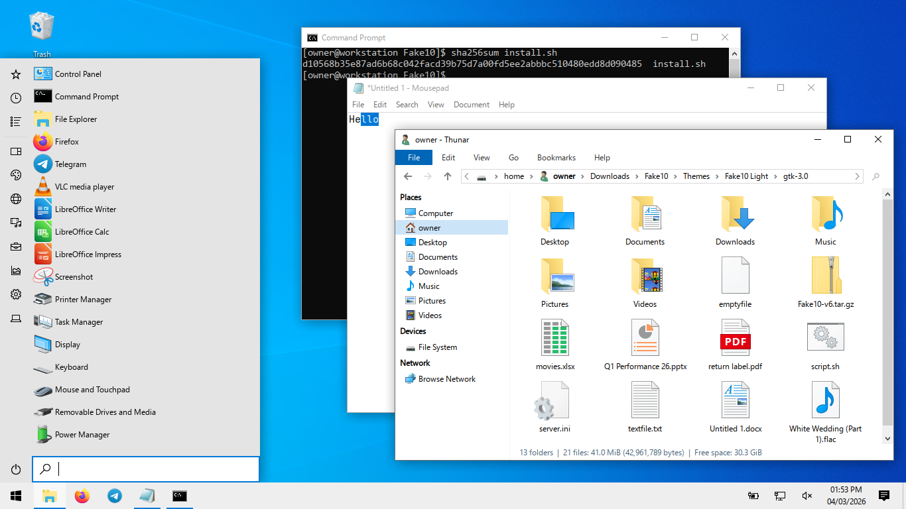
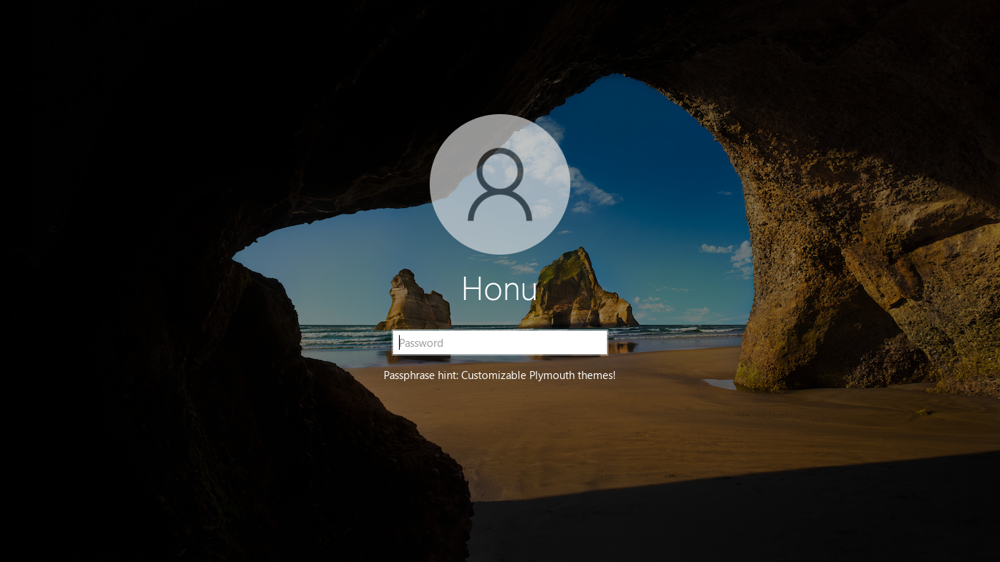
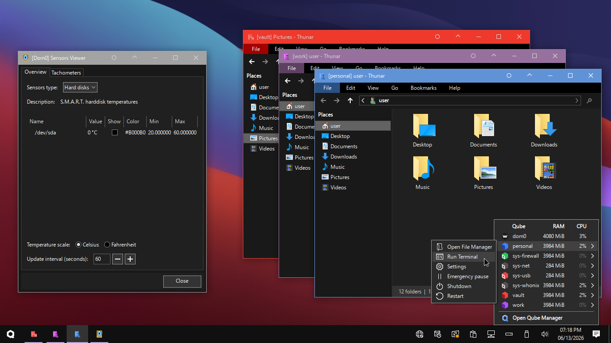
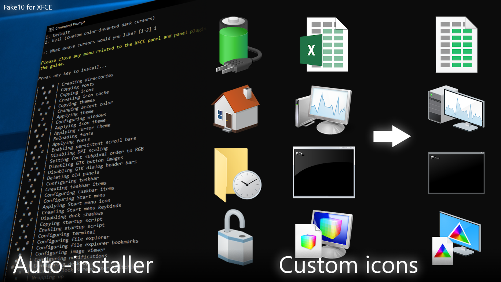
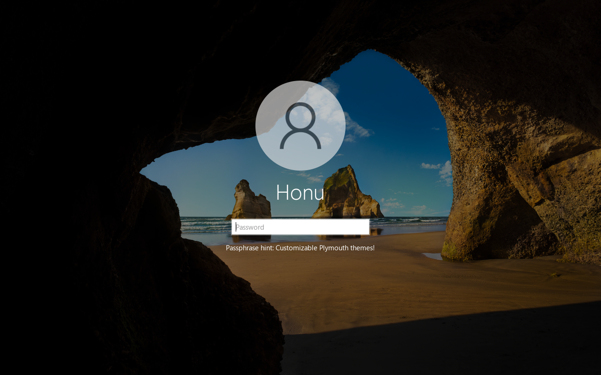
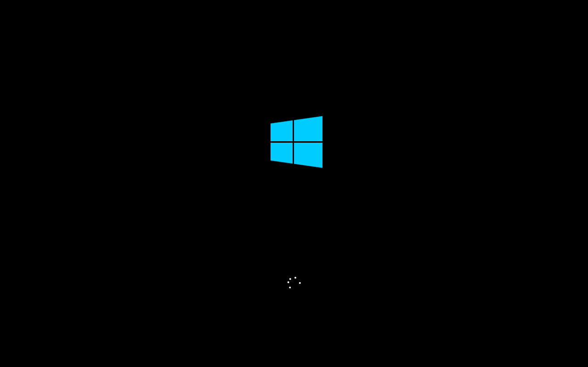
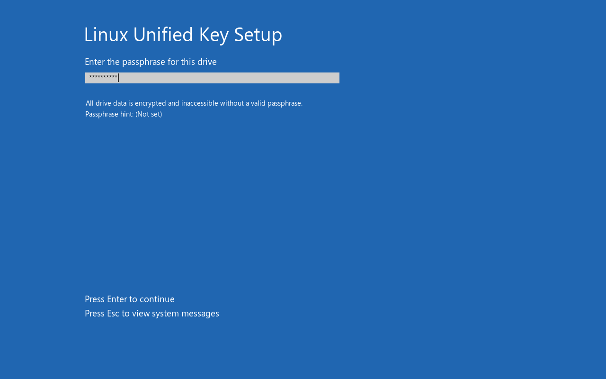
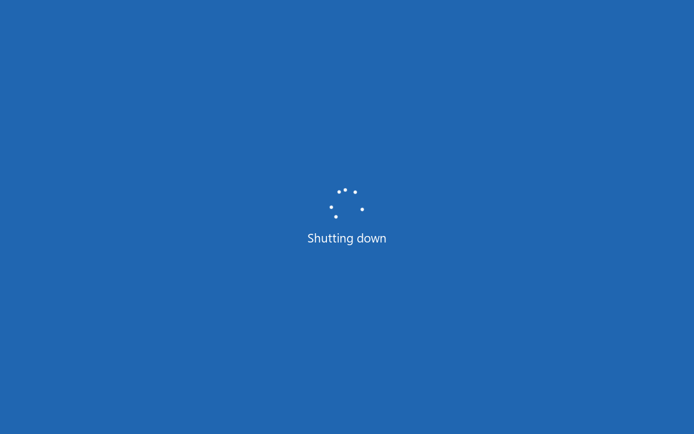
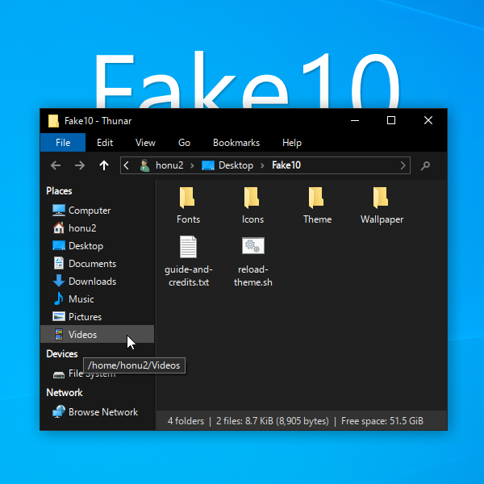
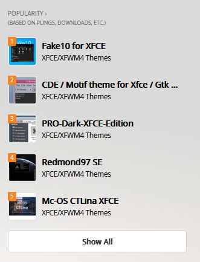